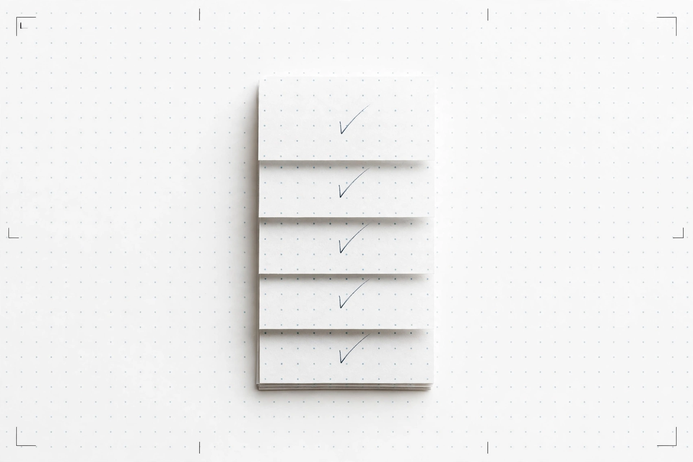
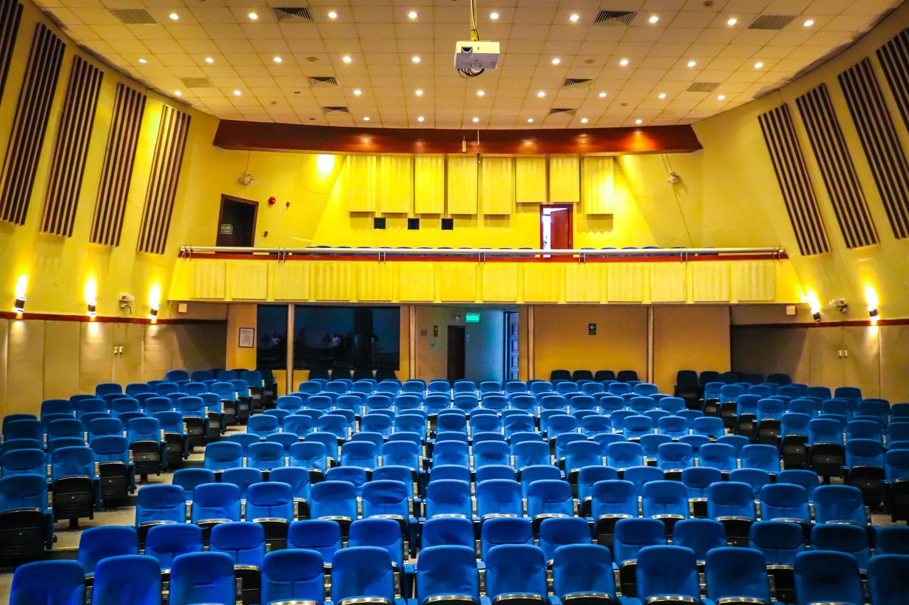
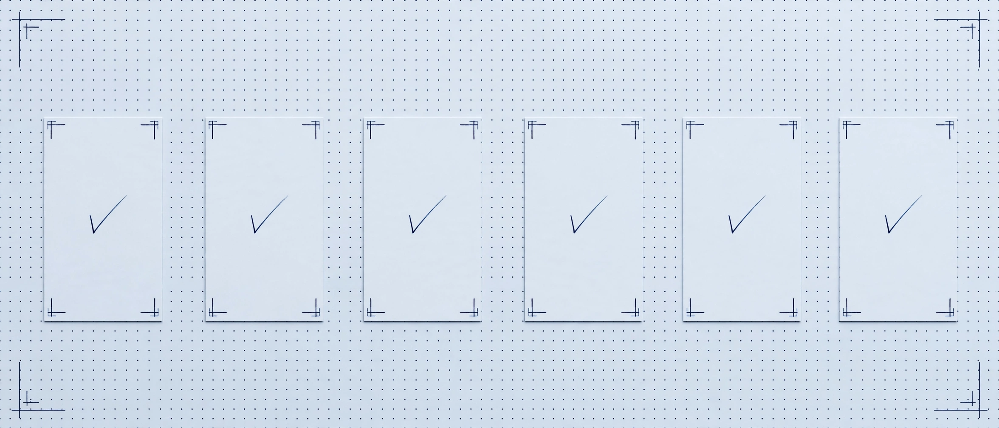

The app — one money decision, before you sign
Check an offer
Artist, city, guarantee. The verdict is arithmetic, with a receipt on every claim. No prediction, no headcount, no made-up number.
01
Offer
enter it below
02
Verdict
the number
03
Evidence
receipts
04
Workspace
compare offers
05
Ledger
after the show
Qloo is not configured for this demo. No verdict can be computed without live Qloo data.
The form below is disabled until Qloo is configured — nothing here is mocked or invented.
No. 01 — The offer
Check an offer
Start here — edit any field. This starting example is not a real deal.
The form is disabled because Qloo is not configured for this demo — no verdict can be computed without live Qloo data.
Four cards — three recorded trials, one blank. Tap a trial to prefill the form; the verdict still requires pressing “Run the verdict”. Nothing auto-runs.
No. 02 — The verdict
Verdict
Aggregate taste signals only — they show how much two audiences share, never a prediction about any individual, and never a promise this show will sell out.
Break-even tickets = ceil((guarantee + entered fixed costs − entered sponsor offset) ÷ (ticket price − variable cost per ticket)). A blank field is not entered.
Cannot break even in this room at this guarantee
Break-even share of seats in this room (not a sellout prediction):
- Ticket price
- Net per ticket
- Capacity
Proof pack
Downloads serialize this same verdict object — no new server call. The JSON pack carries its own SHA-256; the CSV is the same object, second rendering.
Re-rank without the top pick
Re-runs only the ranking step with the same candidate set minus the current top pick. The original verdict above stays untouched.
Headliner
Tags and description resolved for the artist entered — never guessed.
Opener
Candidates from headliner fans, ranked for the city audience.
City
Matched areas and overlap — aggregate signals, never a headcount.
No. 03 — The formula
How the number is computed
Recompute it yourself from the live verdict numbers.
Break-even tickets = ceil((guarantee + entered fixed costs − entered sponsor offset) ÷ (ticket price − variable cost per ticket)). A blank fixed cost is not entered — it is left out of the sum, never treated as zero. An entered sponsor offset is subtracted. No tax or fee rate is assumed.
The count, in the room. A photograph of a live audience facing the stage.
Drawn from this verdict's own numbers. The ticket count is the verdict's number, never recomputed here.
Recorded example — from the recorded trials, not this run. Run a verdict to replace it with live numbers.
Run a verdict to see its worked example here.
When capacity is known and break-even tickets exceed it, the verdict is: “Cannot break even in this room at this guarantee.” When capacity is unknown, no sellout percentage is shown at all.
Check the arithmetic yourself
Arithmetic only — not a verdict, no Qloo call
Break-even: 2,084 tickets
This checker divides and rounds up only. It knows nothing about the artist, the city, or the audience.
No. 04 — The evidence
Evidence behind the number
Full verdict detail, one click away. Nothing here is a second verdict — every line traces to the same run.
Audience evidence
Opener shortlist, ranked for this city audience
Evidence details: who the audience is, whether the artist is rising, shared tags, how the fan bases overlap
Sources checked
No. 05 — Receipts
Proof for every evidence claim (click to re-check)
Every Qloo-backed claim, with the exact call behind it. Replay re-runs that call live. A “—” requestId means the upstream returned none (MCP legs carry an argument hash instead) — never invented; the hash and the replay are the provenance.
Keys never appear here — receipts carry hashes and request IDs, never keys.

No. 06 — The sheet
Verdict sheet — print or copy
Generated from this verdict's own data — never a diverging copy. Print it, or copy the promoter brief.
No. 07 — The race
My gut pick vs the taste-data pick
Gut vs Graph, live. An arm with no provider is shown as unavailable, never given a pick.
The crowd, at night. A photograph of a live audience; the race comparison is below.
Gut vs graph, on the night. A photograph of a live crowd; the race comparison is below.
Comparison arms require an LLM provider — verdict unaffected.
Show the comparison arms anyway
The arms below ran without an LLM provider, so their lanes are unavailable — the verdict above does not depend on them.
Routing example (recorded trial): base city New York (40.7127, −74.0060) · candidate Los Angeles (34.0537, −118.2428). Cities that do not resolve are omitted and labelled; the table stays authoritative. Comparison holds up to 5 offers with no winner badge.
No. 08 — The workspace
Deal workspace
One offer, followed through every commercial move: replacement, renegotiation, routing, budget envelope, comparison, and a settlement check. The workspace lives on this device only — export the JSON to keep it.
Base offer
Editing a term creates a new workspace; prior steps are dropped, never silently re-based.
Replacement
The headliner drops. Re-price a replacement act inside the original terms.
Renegotiation
What must change to reach break-even, holding the other terms fixed.
Routing — where next
Candidate cities you type, ranked by matched-area counts.
Budget envelope
The most you will pay, or the most tickets you can credibly put in the room — exactly one input.
Comparison — up to 5 offers
Row 0 is always the verified base, never re-run.
Settlement check
After the show: promoter-reported attendance against the recorded threshold.
Partial evidence — not a verdict
No break-even number is shown without a price. What follows is partial Qloo evidence, not a verdict.
No. 09 — Recorded trials
Recorded trials — from the committed benchmark ledger. Recorded, not live.
Gut vs Graph — recorded trials
No. 10 — The ledger
Benchmark ledger
Committed, rerunnable Qloo-vs-Gut-vs-Web trials. Runs appear here only after real runs.
Download offline replay pack (recorded, not live) — the 3 dated trials, frozen with checksums. Re-verify the arithmetic and the recorded picks without a fresh Qloo call.
No. 11 — The proof
How deep does OfferSheet's Qloo integration go?
10 of 10 official Qloo tools wired into the verdict — each invoked when its precondition holds, receipted only when it returns data. 8 receipted live across the 3 recorded trials (collective, not per verdict).

Seating bowl, detail. Rows of empty seats in a live room, photographed — not a plan.

Proof slips, checked. A photograph of checked slips.
Qloo tools wired into the verdict
| Tool | What it does | Live status |
|---|---|---|
| qloo_ | Readiness gate — runs first on every verdict; the "Qloo live" badge turns green only after a live call succeeds, never from config alone | Live, receipted |
| qloo_ | Tag-first path — the headliner is resolved to Qloo tags before any audience call; unresolved input shows as unmeasured, never guessed | Live, receipted |
| qloo_ | Headliner + opener cards; an ambiguous name returns candidates to pick from — the verdict never guesses | Live, receipted |
| qloo_ | Opener candidates from fans of the headliner | Live, receipted |
| qloo_ | The opener shortlist ranked for the city audience | Live, receipted (second live run) |
| qloo_ | Where the headliner is popular — the city-audience areas behind the verdict | Live, receipted |
| qloo_ | Full age/gender bands for the headliner audience — not a single top band | Live, receipted |
| qloo_ | Top shared tags between headliner and opener | Live, receipted |
| qloo_ | 90-day momentum leg | Wired; returned empty on live runs so far — shown as no data, never faked |
| qloo_ | Headliner-vs-opener audience overlap | Wired; returned empty on live runs so far — shown as no data, never faked |
REST cross-check layer
REST cross-check layer. Four endpoints wired — /search, /v2/insights (with explainability), /v2/analysis/compare, /entities — so the REST legs cross-check the MCP legs on the same question.
Status, stated plainly: REST restSearch and restEntities receipted live in the 29 Oct 2026 trials; back-to-back runs returned REST 429s, shown as exact failure labels; trends/compare remain wired and empty on live runs so far.
Every Qloo-backed claim carries a receipt — and every receipt re-runs (arithmetic and price lines excepted — see below)
Every Qloo-backed claim carries a receipt — and every receipt re-runs. Each Qloo-backed verdict row shows its SHA-256 request hash, its response requestId when the upstream returns one (shown as — when it does not; the live MCP legs returned none), its result count, and its ordered entity IDs where the leg returns any (legs whose results carry no IDs replay as not comparable, never as a match). Arithmetic and price lines carry no receipt by design — their inputs are labelled by source instead. Click any receipt to re-run the exact call: a match stamps "same IDs in the same order" (proven live: a describe receipt replayed through the deployed backend returned the same ID list in the same order — see the round-trip record on the tool catalogue page); a mismatch surfaces as "count matches but order/IDs differ" — never hidden, never counts-only.
The verdict depends on Qloo — it cannot render without it
The verdict depends on Qloo — it cannot render without it. If Qloo is unconfigured, the page fails closed with a visible 503 and the form disabled; if any required evidence leg fails, the page shows "Verdict withheld: evidence incomplete" with no numbers at all. No mock data, no demo numbers, no silent fallback — ever. Live runs observed 2026-10-29: Billie Eilish in New York → break-even 2,084 tickets, Qloo pick Olivia Rodrigo; Taylor Swift in New York → break-even 2,084 tickets, Qloo pick Carly Rae Jepsen; in 35.3 seconds (Billie) and 26.2 seconds (Taylor).
Gut vs Graph — the honest state
Gut vs Graph — the honest state. OfferSheet runs three arms on the same question: Gut (LLM alone), Graph (Qloo-grounded — the verdict), and Web (LLM + Wikidata facts, no Qloo), with every miss named in a ledger. The ledger and all three arms are live in code; 3 live trials ran 29 Oct 2026 (Qwen primary, Groq fallback proven live) and are recorded in the public benchmark ledger in this repo — counted from ledger rows, never asserted in advance.
What this integration does not claim
What this integration does not claim. No headcount is ever shown (Qloo returns matched areas and entities, not a population number). No sellout prediction is ever shown. Past winners are pattern context only — their technical depth was never independently verified, so nothing here claims to have beaten them.
No. 12 — Limits
What Qloo doesn't decide
Qloo affinities are aggregate taste-overlap signals. They do not decide any of the following — and this page never presents them as if they did:
- No headcount. Qloo returns matched areas and entities, not a population number.
- No sellout prediction. A break-even count is not a promise the room fills.
- No prediction about any individual. Audiences are aggregates, never a person.
- No causal claim. Shared taste does not cause a show to sell out.
- No booking availability, price, or terms. An opener pick is not a booking, and unconfirmed terms stay unconfirmed.
- No signing recommendation. The verdict is a count with evidence; the promoter decides.
Failure cases — what you see, and what it means
| Case | What the page shows | What it means |
|---|---|---|
| Qloo not configured | Visible 503, form disabled | Outage refusal — no verdict can be computed |
| Ticketmaster key missing | Verdict renders; capacity unknown, never a sellout percentage | Thin-data state — not a 503; verify room size before signing |
| LLM providers missing | Verdict renders; arms unavailable, no miss trial | Thin-data state — not a 503; the Qloo-grounded pick still stands on its receipts |
| Qloo harness down | 502 on the MCP path; 500 or 502 on the HTTP path | Outage state — not a 503; no verdict numbers from partial evidence |
| Per-visitor daily cap reached | 429, try again tomorrow | Cap state — not a 503; no stale or invented data is served |
| Required evidence leg fails | “Verdict withheld: evidence incomplete”, no numbers | Refusal — the missing legs are named (OUTAGE if a leg errored, THIN DATA if legs returned empty or skipped) |
| Price unknown | No break-even number; partial evidence only | Thin-data state — a count needs a price |
| Ambiguous headliner name | Needs-input picker, no guess | Thin-data state — pick the entity you mean |
| Capacity unknown | Tickets needed only, no sellout percentage | Thin-data state — verify room size before signing |
| REST leg rate-limited (429) | Exact failure label on that leg | Outage label — the verdict still stands on MCP legs |
| Trends / compare empty | Shown as no data | Thin-data state — never faked |
| No opener clears the checks | No forced winner | “No equivalent cleared the evidence checks — this does not mean none exists.” |
Cite-or-omit rule. Every Qloo-backed sentence on a verdict traces to a receipt below; LLM-arm picks are labelled LLM-only. A sentence with no backing receipt is dropped or labelled LLM-only — never presented as Qloo-backed.
No personal data is sent to Qloo. Aggregate audiences only. If Qloo is not configured, the page fails closed with a visible 503 — never mock data. Qloo affinities are aggregate taste-overlap signals — how much two audiences share — never predictions about any individual, and never a causal claim that a show will sell out.